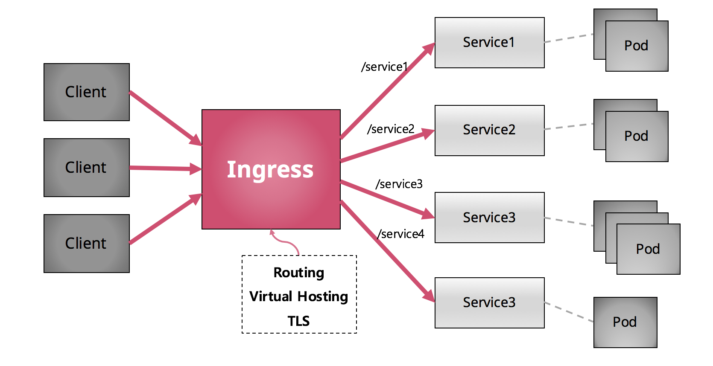

[Kubernetes 활용(5/8)] Ingress

Kubernetes에서는 애플리케이션을 외부로 노출하기 위해 Service object를 NodePort로 생성합니다.
그러나 노출 형태가 노드의 IP에 특정 포트(30000-32767)로 제공되기 때문에 호출이 까다롭고 사용자가 서비스로 유입되는 경로도 다양해서 관리가 어려워질 수 있는데요.
이 때, 외부 액세스를 관리하고 서비스를 묶어주는 역할을 하는게 바로 Ingress 입니다.
Ingress 란?

위 그림과 같이 Ingress는 외부 액세스를 관리하고 서비스를 묶어주는 역할을 합니다.
Ingress를 만들 때 도메인을 지정할 수 있고 사용자는 그 도메인으로 접속을 하게 되며 도메인 하위의 path 설정을 통해 서비스들을 라우팅할 수 있게 됩니다.
그래서 사용자는 Ingress에 설정된 도메인에 하위 path를 url로 호출하게 되면 특정 서비스로 라우팅이 되고 그 서비스에서 로드밸런싱 정책을 통해 실제 Pod(컨테이너화된 애플리케이션)로 호출이 되는 원리입니다.
또한 Ingress는 추가적으로 가상 호스팅이나 TLS 등 여러 가지 기능을 제공합니다.
Ingress 적용 방법
애플리케이션 배포
먼저, Ingress에서 라우팅할 애플리케이션을 배포합니다.
Kubernetes 환경에 애플리케이션을 배포하기 위해, Deployment YAML 파일을 작성합니다.
gs-spring-boot-docker-deployment.yaml
apiVersion: apps/v1beta2 kind: Deployment metadata: name: gs-spring-boot-docker-deployment labels: app: gs-spring-boot-docker spec: replicas: 1 selector: matchLabels: app: gs-spring-boot-docker template: metadata: labels: app: gs-spring-boot-docker spec: containers: - name: gs-spring-boot-docker image: dtlabs/gs-spring-boot-docker:1.0 ports: - containerPort: 8080 imagePullPolicy: Always- Kubernetes 환경에 애플리케이션을 배포하기 위해, Service YAML 파일을 작성합니다.
gs-spring-boot-docker-service.yaml
apiVersion: v1 kind: Service metadata: name: gs-spring-boot-docker-service spec: ports: - name: http port: 8081 targetPort: 8080 selector: app: gs-spring-boot-docker type: NodePortkubectl apply명령어로 애플리케이션을 배포합니다.kubectl apply
$ kubectl apply -f gs-spring-boot-docker-deployment.yaml -f gs-spring-boot-docker-service.yaml deployment "gs-spring-boot-docker" created service "gs-spring-boot-docker" createdkubectl get명령어를 입력해 Pod, Service, Deployment가 제대로 생성되었는지 확인합니다.
kubectl get
$ kubectl get po,svc,deploy NAME READY STATUS RESTARTS AGE po/gs-spring-boot-docker-3520417772-sqssr 1/1 Running 0 33s NAME TYPE CLUSTER-IP EXTERNAL-IP PORT(S) AGE svc/gs-spring-boot-docker NodePort 10.0.0.213 <none> 8080:<SERVICE_PORT>/TCP 27s NAME DESIRED CURRENT UP-TO-DATE AVAILABLE AGE deploy/gs-spring-boot-docker 1 1 1 1 33s
Ingress 생성
배포된 애플리케이션으로 요청이 라우팅될 수 있도록 Ingress를 생성합니다.
Ingress를 생성하기 위해, 다음과 같이 YAML를 작성합니다.
gs-spring-boot-docker-ingress.yaml
apiVersion: extensions/v1beta1 kind: Ingress metadata: name: gs-spring-boot-docker-ingress annotations: ingress.kubernetes.io/rewrite-target: / spec: rules: - host: <HOST_NAME>.<DOMAIN_NAME> http: paths: - path: /hello-world backend: serviceName: gs-spring-boot-docker-service servicePort: 8080line1 apiVersion
API Server에서 관리되는 API 버전을 나타냅니다. 사용자가 입력한 apiVersion에 맞는 API를 사용하게 됩니다. Kubernetes API는 실험 단계의 API를 ‘beta’ 형태로 지원하고, 지속 업데이트 하고 있습니다. 따라서 Kubernetes API 공식문서를 통해 현재 사용자의 Kubernetes 버전 별 호환 및 사용 가능한 API를 확인 후 사용해야 합니다.
line2 kind
현재 yaml이 어떤 object를 생성하기 위함인지 kind에 설정합니다. kind: Ingress 설정을 통해 현재 yaml로 Ingress object를 생성하게 됩니다.
line3 metadata
Ingress object 자신의 고유 정보를 입력합니다.
line4 metadata.name
Ingress 대한 Unique-key를 입력합니다. 이 name 값을 통해 여러 object 중 해당 name을 갖는 object를 조회할 수 있습니다.
line6 metadata.annotations.ingress.kubernetes.io/rewrite-target
Ingress의 기본 경로를 / 로 주지 않으면 자동으로 path를 구성하므로 원하는 경로로 지정하기 위해서는 /로 구성해야 합니다.
line7 spec
Ingress 수행하는 내용에 대한 설정 입니다.
line9 spec.rules.host
Ingress에 지정할 호스트입니다. Ingress를 사용하기 위해서는, 먼저 DNS Server가 구성되어 있어야 합니다. Domain Name과 Host Name이 조합되어 DNS Server로 호스팅 됩니다. 예를 들어 Kubernetes에 구성된 도메인이 zcp.mybluemix.net 이고, Ingress에 붙일 특정 호스트명은 cloudz-labs 라고 하면 cloudz-labs.zcp.mybluemix.net 으로 호스트를 지정하면 됩니다.
line11 spec.rules.http.paths
라우팅할 서비스를 설정하는 부분입니다.
line12 spec.rules.http.paths.path
라우팅할 서비스에 대한 path를 설정합니다. 앞에서 지정한 host 하위로 붙는 경로입니다. 사용자는 앞에서 지정한 호스트 하위에 해당 path를 호출하면 원하는 서비스로 라우팅이 가능합니다.
line14 spec.rules.http.paths.backend.serviceName
실제로 라우팅할 서비스의 이름을 지정하는 부분입니다.
line15 spec.rules.http.paths.backend.servicePort
실제로 라우팅할 서비스가 사용하는 포트를 지정하는 부분입니다.
- kubectl apply 명령어를 입력해 Ingress를 생성합니다.
kubectl apply
$ kubectl apply -f gs-spring-boot-docker-ingress.yaml ingress "gs-spring-boot-docker-ingress" created
Ingress 확인
kubectl get명령어로 생성된 Ingress의 목록을 확인합니다.kubectl get
$ kubectl get ing NAME HOSTS ADDRESS PORTS AGE gs-spring-boot-docker-ingress <HOST_NAME>.<DOMAIN_NAME> 80 5scurl명령어로 Ingress에 설정된 URL로 접속했을 때, 배포된 애플리케이션으로 라우팅되는지 확인합니다. 애플리케이션을 직접 호출했을 때와 결과가 같은 것을 확인할 수 있습니다.
curl
$ curl "http://<HOST_NAME>.<DOMAIN_NAME>/hello-world" Hello Docker World
Ingress 삭제
더 이상 Ingress를 사용하지 않는다면 Ingress를 삭제합니다.
kubectl delete명령어로 Ingress Netrowk를 삭제합니다.kubectl delete
$ kubectl delete -f gs-spring-boot-docker-ingress.yaml ingress "gs-spring-boot-docker-ingress" deletedcurl명령어로 Ingress가 삭제되었는지 확인합니다.
curl
$ curl "http://<HOST_NAME>.<DOMAIN_NAME>/hello-world" default backend - 404